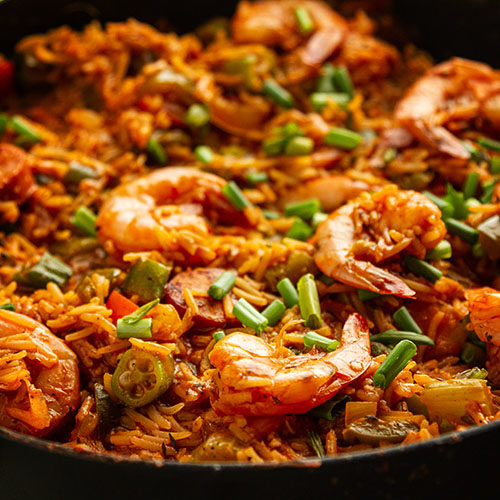

Jambalaya

Description
Jambalaya is an American Creole and Cajun rice dish of French, African, and Spanish influence, consisting mainly of meat and vegetables mixed with rice.
Ingredients
- 1 tbsp. extra-virgin olive oil
- 1 onion, chopped
- 2 bell peppers, chopped
- Kosher salt
- Freshly ground black pepper
- 1 lb. boneless skinless chicken breasts, cut into 1" pieces
- 1 tsp. dried oregano
- 6 oz. andouille sausage, sliced
- 2 cloves garlic, minced
- 2 tbsp. tomato paste
- 2 c. low-sodium chicken stock
- 1 (15-oz.) can crushed tomatoes
- 1 c. long grain rice
- 2 tsp. Old Bay seasoning
- 1 lb. medium shrimp, peeled and deveined
- 2 green onions, thinly sliced